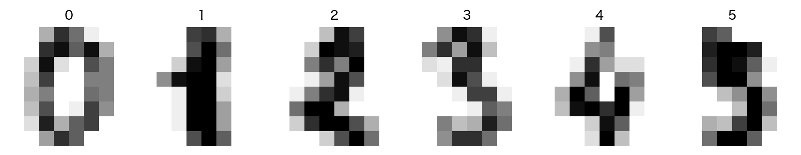
第9回 主成分分析①
X を少数の軸で近似し、F と A を交互に解く
第I部 理論
場面①：1枚は64個の数
手書きの数字の画像。1枚は8×8＝64 マスの濃さ（0〜16）。
場面②：1枚がXの1行
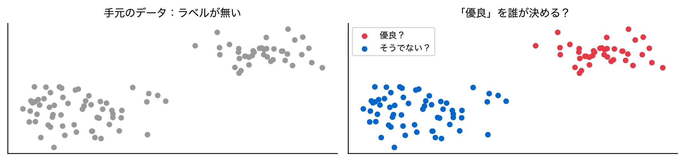
1,797 枚を1行ずつ並べると、n\times p= 1,797 \times 64 のデータ行列 \mathbf X。2列の組は 2,016 通りで、散布図を全部は描けない。
場面③：赤い枠の2マス
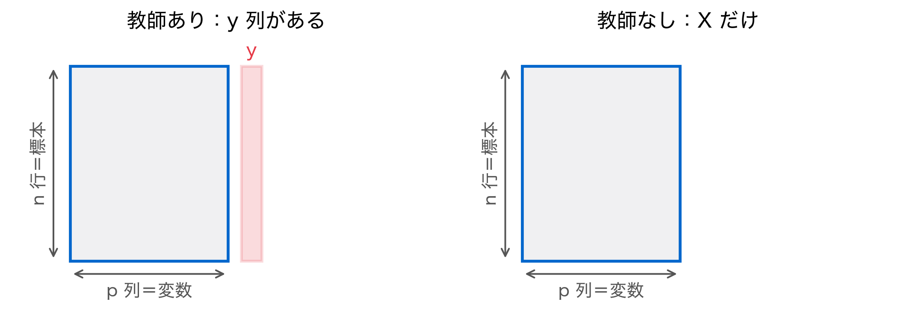
1段目の左から3マス目と、8段目の左から3マス目。この2列を、全部の画像で並べてみる。
場面④：一緒に動く2マス
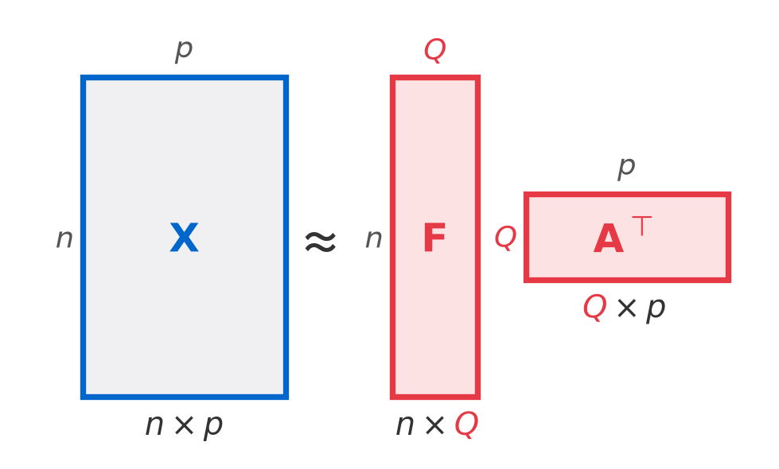
1,797 枚の点は、ほぼ1本の線の上に乗る（相関 0.938）。
場面⑤：2つの数を1つで言う
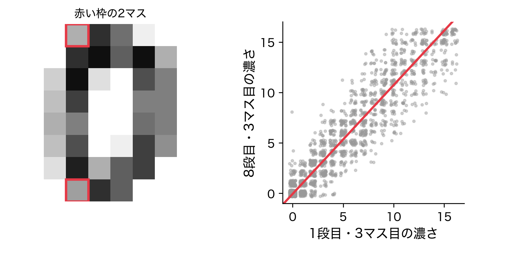
赤い直線の上の位置を言えば、2マスの濃さがほぼわかる。2つの数を1つの数で言える。
前回の目的関数
第8回で、\mathbf X 自身を少数の軸で近似する目的関数を書いた。
\min_{\mathbf F,\mathbf A}\ \lVert\mathbf X-\mathbf F\mathbf A^\top\rVert_F^2 \qquad\text{ただし}\ \mathbf A^\top\mathbf A=\mathbf I_Q
書いただけで、まだ解いていない。
今回の問い
X自身を少数の軸で近似するとき、FとAをどう求めるか？
今回覚える言葉
- 主成分得点・主成分負荷量
- 正規直交制約
- 交互最小二乗法
- トレースと特異値分解
- 直交プロクラステス問題
直感①：点の雲
もっと簡単な場面で考える。ここでは人工的なデータ。2列・40 点、列の平均は0。各点は \tilde{\boldsymbol x}_i=[x_{i1},x_{i2}]^\top。
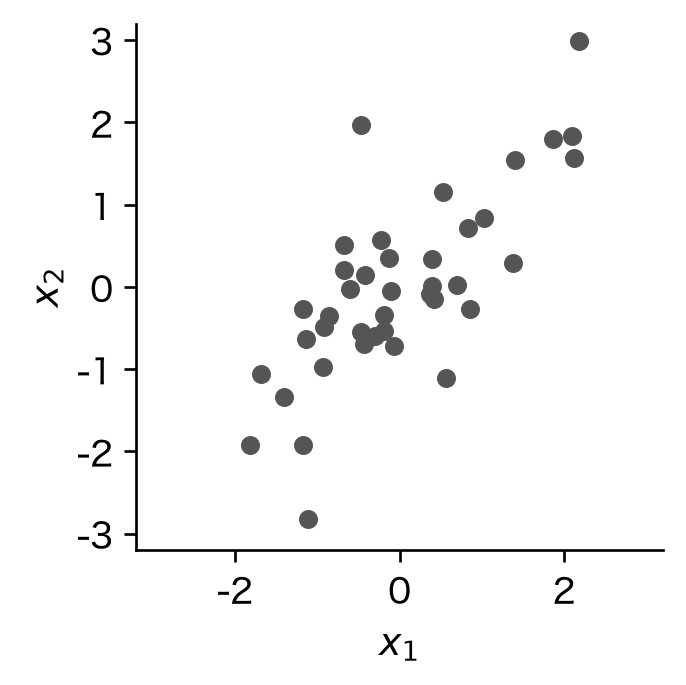
直感②：原点を通る直線
赤は原点を通る直線。向きを長さ1のベクトル \boldsymbol a で表す。
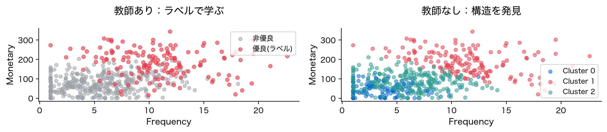
直感③：直線の上の点で近似
各点を、直線の上の青い点 f_i\boldsymbol a で近似する。f_i は直線の上の位置。2つの数を1つの数 f_i で言う。
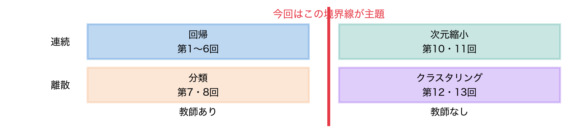
直感④：誤差は直線への垂線
誤差は灰色の線 \tilde{\boldsymbol x}_i-f_i\boldsymbol a。直線への垂線になる。
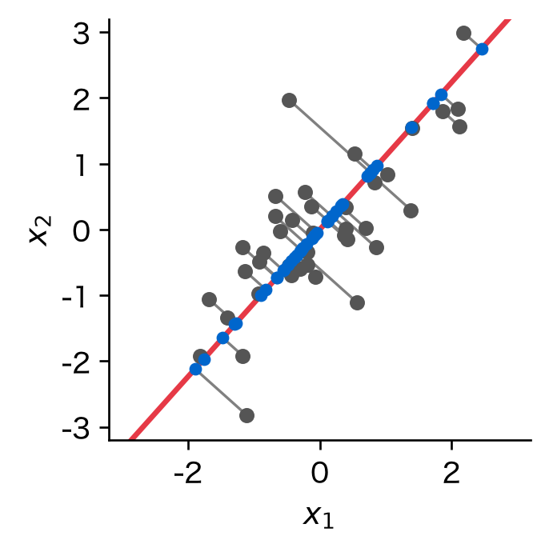
直感⑤：回帰の縦の線とは違う
第1回の回帰（x_2 を x_1 で当てる）なら、誤差は縦の線。
回帰は x_2 だけを近似した。ここでは2列を対等に近似する。
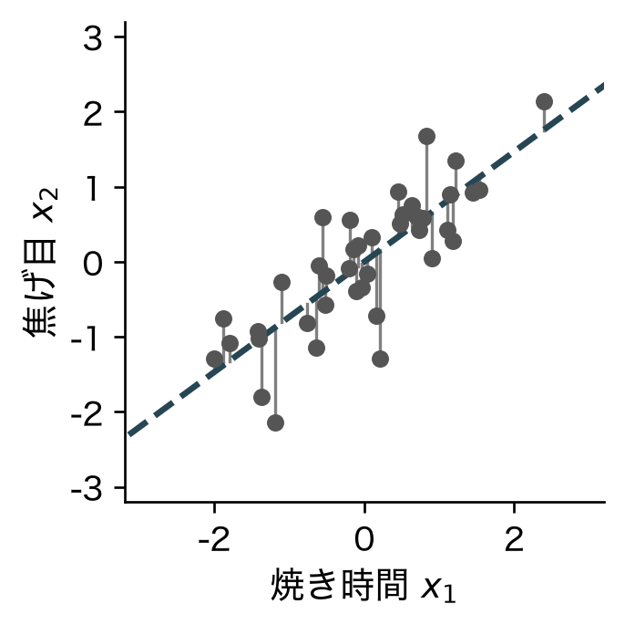
直感⑥：向きで誤差が変わる
向きを160度にすると、垂線が長くなる。
誤差の二乗和は 11.6 から 73.1 へ。よい向きと悪い向きがある。
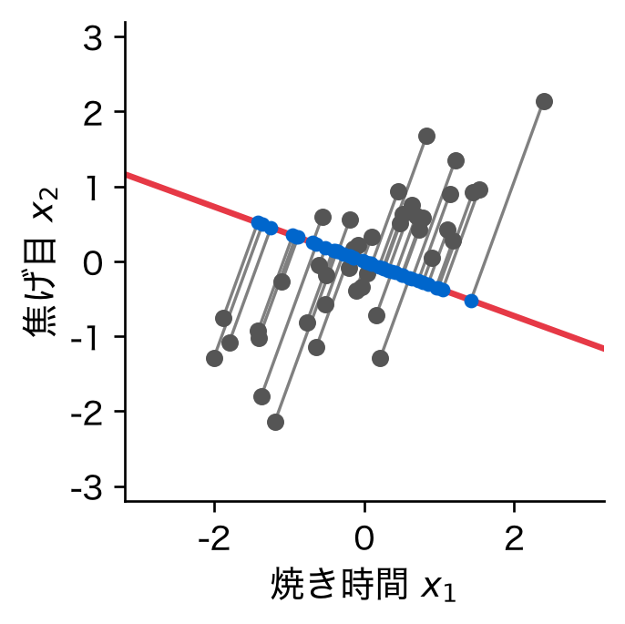
行列で見る①：X ≈ F
p 列を Q 本の軸で近似する。\mathbf F（n\times Q）は、各行の軸の上の位置。
行列で見る②：X ≈ FAᵀ
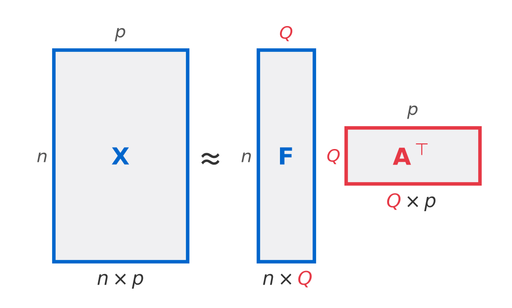
\mathbf A（p\times Q）は軸の向き。Q 本の向きを列に並べた。
モデル：データ＝モデル＋誤差
\mathbf X=\mathbf F\mathbf A^\top+\mathbf E
第1回の「データ＝モデル＋誤差」。モデルが \mathbf X\boldsymbol\beta から、未知どうしの積 \mathbf F\mathbf A^\top に替わった。
次の問い：誤差をどう測るか
- 近似 \mathbf F\mathbf A^\top と \mathbf X のずれが、誤差 \mathbf E
- 向きによって、誤差の大きさが変わった
\mathbf E の大きさを、1マスずつの和から書く。
目的関数①：1軸・1マスずつ
J=\sum_{i=1}^{n}\sum_{j=1}^{p}\bigl(x_{ij}-f_i\,a_j\bigr)^2
軸が1本（Q=1）。マス x_{ij} を、行の位置 f_i と軸の向きの成分 a_j の積で近似する。
目的関数②：軸がQ本
J=\sum_{i=1}^{n}\sum_{j=1}^{p}\Bigl(x_{ij}-\sum_{m=1}^{Q}f_{im}\,a_{jm}\Bigr)^2
Q 本の軸の組み合わせで近似する。Q=1 なら①に戻る。
目的関数③：1行ずつまとめる
J=\sum_{i=1}^{n}\bigl\lVert\tilde{\boldsymbol x}_i-\mathbf A\tilde{\boldsymbol f}_i\bigr\rVert_2^2
\tilde{\boldsymbol f}_i\in\mathbb R^Q は \mathbf F の第 i 行。\mathbf A\tilde{\boldsymbol f}_i の第 j 成分が \sum_m a_{jm}f_{im}。
目的関数④：行列で書く
J(\mathbf F,\mathbf A)=\lVert\mathbf X-\mathbf F\mathbf A^\top\rVert_F^2
第8回の目的関数⑤。フロベニウスノルムは全マスの二乗和。
制約①：倍率が決まらない
f_i\,a_j=(c\,f_i)\Bigl(\frac{a_j}{c}\Bigr)
f_i を c 倍、a_j を 1/c 倍しても、積も J も変わらない。倍率を \mathbf F と \mathbf A で押し付け合える。
制約②：軸は長さ1で直角
\mathbf A^\top\mathbf A=\mathbf I_Q
(m,r) 成分は \boldsymbol a_m^\top\boldsymbol a_r。対角が1で各軸の長さが1、対角の外が0で軸どうしが直角。Q=1 なら \lVert\boldsymbol a\rVert_2=1。
定義：得点と負荷量
| 記号 | 大きさ | 名前 | 意味 |
|---|---|---|---|
| \lVert\mathbf X-\mathbf F\mathbf A^\top\rVert_F^2 | — | 主成分分析の目的関数 | |
| \mathbf F | n\times Q | 主成分得点行列 | 各行の、軸の上の位置 |
| \mathbf A | p\times Q | 主成分負荷量行列 | 変数と軸の関係（軸の向き） |
次の問い：どう解くか
- 回帰は、勾配を0とおいた正規方程式を1回解けば済んだ
- 主成分分析の未知は \mathbf F と \mathbf A の2つ
未知が2つの積なら、どう解くか。
解き方：同時には解けない
| 回帰 | 主成分分析 | |
|---|---|---|
| 未知 | \boldsymbol\beta だけ | \mathbf F と \mathbf A の2つ |
| モデル | \mathbf X\boldsymbol\beta | \mathbf F\mathbf A^\top（未知どうしの積） |
| 解き方 | 勾配を0とおき、1回解く | 一度には解けない |
片方を固定する
- \mathbf A を既知として扱う（固定する）と、J は \mathbf F だけの関数
- \mathbf F を固定すると、J は \mathbf A だけの関数
片方を固定すれば、残りの1つは解ける。
交互最小二乗法①：Fの更新
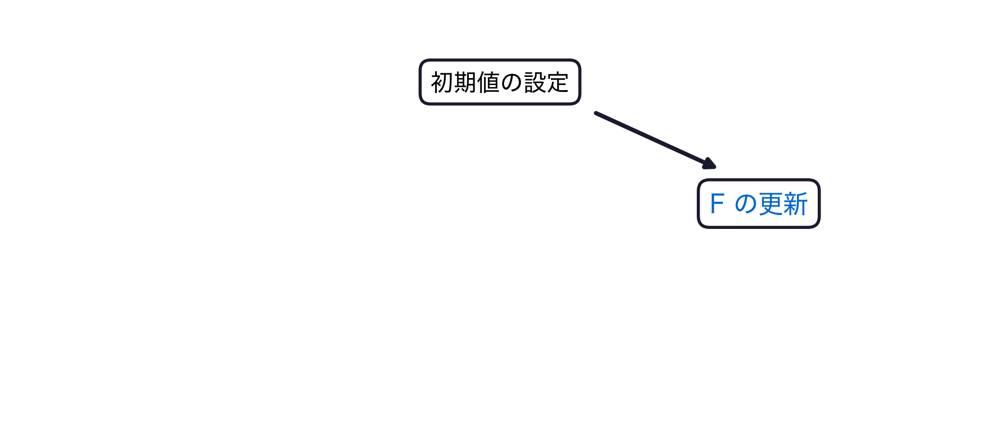
\mathbf A の初期値を置き、\mathbf A を固定して \mathbf F を求める。
交互最小二乗法②：Aの更新
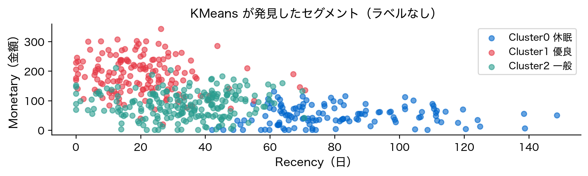
次に、今の \mathbf F を固定して \mathbf A を求める。
交互最小二乗法③：繰り返す

収束したと判断するまで、2つの更新を繰り返す（反復計算）。
単調減少：Jは上がらない
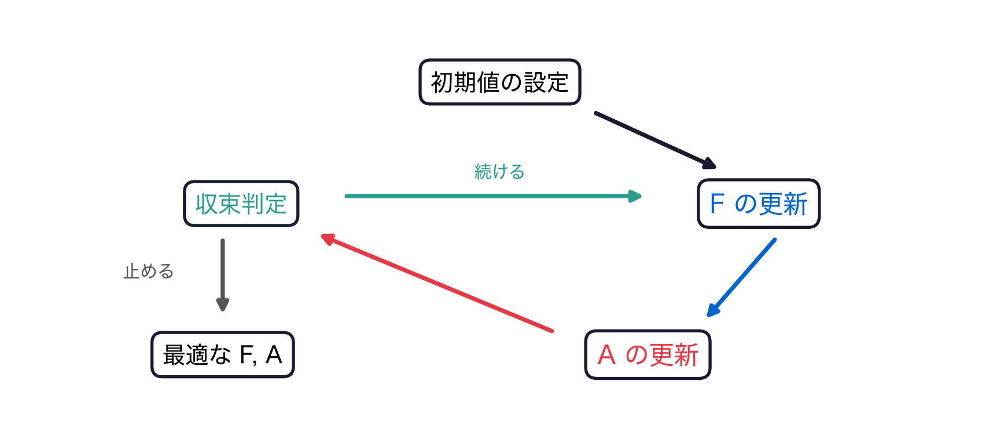
どちらの更新も、固定した残りのもとで J を最小にする。だから更新のたびに J は下がるか変わらない。
次の問い：更新に何が要るか
- \mathbf F の更新：行列のまま微分する道具（トレースとその偏微分）
- \mathbf A の更新：制約 \mathbf A^\top\mathbf A=\mathbf I_Q があり、微分を0とおけない（特異値分解と部分正規直交行列）
道具を先にそろえる。
道具①：トレース
\operatorname{tr}(\mathbf M)=\sum_{j=1}^{p}m_{jj}, \qquad \operatorname{tr}\begin{bmatrix}1&2\\3&4\end{bmatrix}=1+4=5
正方行列の対角成分の和。
道具②：順番を回してよい
\operatorname{tr}(\mathbf B\mathbf C)=\operatorname{tr}(\mathbf C\mathbf B),\qquad \operatorname{tr}(\mathbf M)=\operatorname{tr}(\mathbf M^\top)
どちらも成分で書けば \sum_i\sum_j b_{ij}c_{ji}。転置は対角成分を変えない。3つ以上の積でも順番を回してよい。
道具③：二乗和をトレースで
\lVert\mathbf M\rVert_F^2=\sum_{i=1}^{n}\sum_{j=1}^{p}m_{ij}^2=\operatorname{tr}(\mathbf M^\top\mathbf M)
\mathbf M^\top\mathbf M の第 j 対角成分は、第 j 列の二乗和。
道具④：成分ごとに偏微分
\begin{aligned} \operatorname{tr}(\mathbf B^\top\mathbf C)&=\sum_{i=1}^{n}\sum_{m=1}^{Q}b_{im}c_{im}\\ \Longrightarrow\quad\frac{\partial}{\partial b_{im}}\operatorname{tr}(\mathbf B^\top\mathbf C)&=c_{im} \end{aligned}
1\times1 なら \frac{d}{db}(bc)=c。偏微分を \mathbf B と同じ形に並べる。
道具⑤：トレースの偏微分
\frac{\partial\operatorname{tr}(\mathbf B^\top\mathbf C)}{\partial\mathbf B}=\mathbf C,\qquad \frac{\partial\operatorname{tr}(\mathbf B^\top\mathbf B)}{\partial\mathbf B}=2\mathbf B
2つ目は \sum_{i,m}b_{im}^2 の偏微分が 2b_{im} だから。
道具⑥：特異値分解
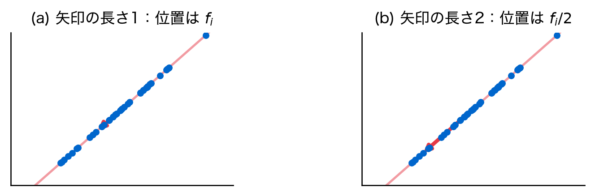
\mathbf M=\mathbf K\boldsymbol\Delta\mathbf L^\top,\qquad \mathbf K^\top\mathbf K=\mathbf L^\top\mathbf L=\mathbf L\mathbf L^\top=\mathbf I_Q
\boldsymbol\Delta は対角に特異値 \delta_1\ge\dots\ge\delta_Q\ge0。どんな行列もこの形に書ける。
道具⑦：1列なら向きと長さ
\boldsymbol m=\frac{\boldsymbol m}{\lVert\boldsymbol m\rVert_2}\cdot\lVert\boldsymbol m\rVert_2\cdot 1
Q=1 の特異値分解。\mathbf K は長さ1にそろえた \boldsymbol m、特異値は長さ \lVert\boldsymbol m\rVert_2、\mathbf L=1。
道具⑧：部分正規直交行列
- 正規直交行列の一部を切り出した行列
- \mathbf K や \mathbf A のように、列が長さ1で互いに直角な行列もそう
道具⑨：積も部分正規直交
- 部分正規直交行列どうしの積も、部分正規直交行列
- どの成分も絶対値1以下（長さ1の列の一部だから）
道具⑩：トレースの上限
\operatorname{tr}(\mathbf T\boldsymbol\Delta)=\sum_{m=1}^{Q}t_{mm}\,\delta_m\ \le\ \sum_{m=1}^{Q}\delta_m=\operatorname{tr}(\boldsymbol\Delta)
\mathbf T が部分正規直交行列なら t_{mm}\le1。等号は \mathbf T=\mathbf I_Q のとき。
道具がそろった
- \mathbf F の更新：道具①〜⑤（トレースとその偏微分）
- \mathbf A の更新：道具⑥〜⑩（特異値分解とトレースの上限）
どちらもスカラーから始め、ベクトル、行列の順に解く。
Fの更新①：Aを固定する
直感の点で Q=1。向き \boldsymbol a を固定し、各点の位置 f_i を決める。
行 i の項 \sum_j(x_{ij}-f_ia_j)^2 は、f_i だけの放物線。
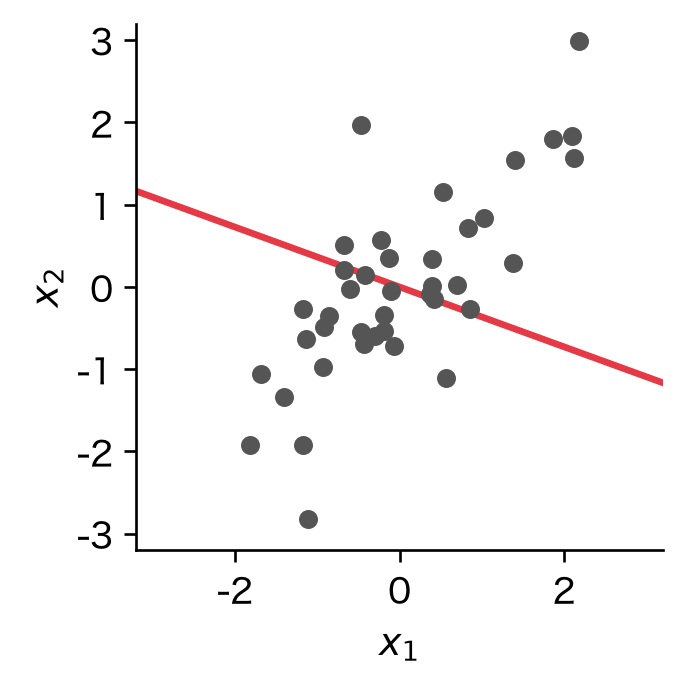
Fの更新②：1軸なら微分
\begin{aligned} &\frac{d}{df_i}\sum_{j=1}^{p}\bigl(x_{ij}-f_i a_j\bigr)^2=-2\sum_{j=1}^{p}a_j\bigl(x_{ij}-f_i a_j\bigr)=0\\ \Longrightarrow\quad&\hat f_i=\sum_{j=1}^{p}a_j\,x_{ij}\qquad\Bigl(\textstyle\sum_j a_j^2=1\Bigr) \end{aligned}
第1回の単回帰の \hat\beta=\sum xy/\sum x^2 と同じ形。
Fの更新③：垂線の足
\hat f_i=\boldsymbol a^\top\tilde{\boldsymbol x}_i の位置は、点から直線へ下ろした垂線の足（青）。
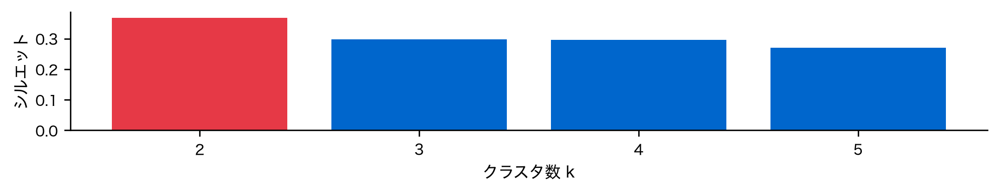
Fの更新④：勾配を0に
\begin{aligned} &\frac{\partial}{\partial\tilde{\boldsymbol f}_i}\bigl\lVert\tilde{\boldsymbol x}_i-\mathbf A\tilde{\boldsymbol f}_i\bigr\rVert_2^2 =-2\mathbf A^\top\tilde{\boldsymbol x}_i+2\mathbf A^\top\mathbf A\,\tilde{\boldsymbol f}_i=\boldsymbol 0\\ \Longrightarrow\quad&\hat{\tilde{\boldsymbol f}}_i=\mathbf A^\top\tilde{\boldsymbol x}_i \end{aligned}
第1回の正規方程式の \mathbf X を \mathbf A に替えた形。\mathbf A^\top\mathbf A=\mathbf I_Q で逆行列が要らない。
Fの更新⑤：トレースで展開
\begin{aligned} J&=\operatorname{tr}\bigl((\mathbf X-\mathbf F\mathbf A^\top)^\top(\mathbf X-\mathbf F\mathbf A^\top)\bigr)\\ &=\operatorname{tr}(\mathbf X^\top\mathbf X)-2\operatorname{tr}(\mathbf F^\top\mathbf X\mathbf A)+\operatorname{tr}(\mathbf F^\top\mathbf F) \end{aligned}
道具②③を使った。最後の項は \operatorname{tr}(\mathbf A\mathbf F^\top\mathbf F\mathbf A^\top)=\operatorname{tr}(\mathbf F^\top\mathbf F\mathbf A^\top\mathbf A) に \mathbf A^\top\mathbf A=\mathbf I_Q。
Fの更新⑥：F̂ = XA
\frac{\partial J}{\partial\mathbf F}=-2\mathbf X\mathbf A+2\mathbf F=\mathbf O \qquad\Longrightarrow\qquad \hat{\mathbf F}=\mathbf X\mathbf A
道具⑤。第 i 行は \tilde{\boldsymbol x}_i^\top\mathbf A、つまり④の \mathbf A^\top\tilde{\boldsymbol x}_i を横にしたもの。行ごとの回帰を縦に積んだだけ。
Aの更新①：1軸なら内積
J=\underbrace{\sum_{i,j}x_{ij}^2+\sum_i f_i^2}_{\boldsymbol a\ \text{によらない}}-2\sum_{j=1}^{p}a_j\,b_j, \qquad b_j=\sum_{i=1}^{n}f_i\,x_{ij}
今度は \boldsymbol f を固定し、\sum_ja_j^2=1 を使った。J を最小にする ＝ 内積 \boldsymbol a^\top\boldsymbol b を最大にする。
Aの更新②：長さ1の候補
\boldsymbol a は長さ1の矢印（灰）の中から選ぶ。\boldsymbol b=\mathbf X^\top\boldsymbol f（黒）との内積がいちばん大きいのはどれか。
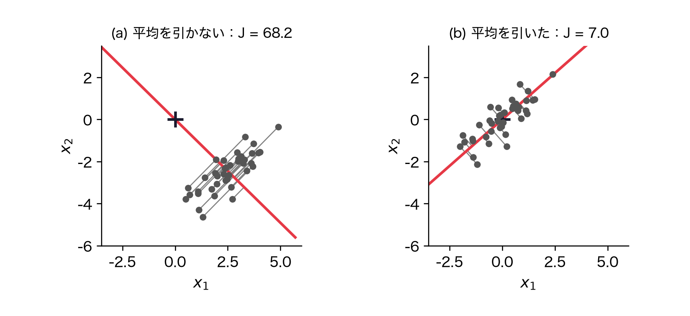
Aの更新③：向きをそろえる
\boldsymbol a^\top\boldsymbol b=\lVert\boldsymbol b\rVert_2\cos\theta。\boldsymbol b と同じ向きのとき最大になる。
\hat{\boldsymbol a}=\boldsymbol b/\lVert\boldsymbol b\rVert_2
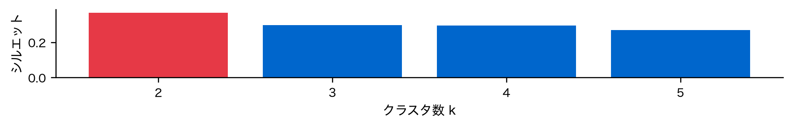
Aの更新④：トレースの最大化
J(\mathbf A\mid\mathbf F)=\operatorname{const}_{\mathbf A}-2\operatorname{tr}(\mathbf X^\top\mathbf F\mathbf A^\top)
Fの更新⑤と同じ展開。制約 \mathbf A^\top\mathbf A=\mathbf I_Q があるので、微分して0とおく方法は使えない。トレースを最大にする。
Aの更新⑤：p=Qのとき
\begin{aligned} &\mathbf X^\top\mathbf F=\mathbf K\boldsymbol\Delta\mathbf L^\top,\qquad \mathbf T=\mathbf K^\top\mathbf A\mathbf L\\ \Longrightarrow\quad&\operatorname{tr}(\mathbf X^\top\mathbf F\mathbf A^\top)=\operatorname{tr}(\mathbf T\boldsymbol\Delta)\le\operatorname{tr}(\boldsymbol\Delta) \end{aligned}
道具②で順番を回し、道具⑩で上から押さえた。
Aの更新⑥：直交プロクラステス
\mathbf T=\mathbf I_p \quad\Longleftrightarrow\quad \hat{\mathbf A}=\mathbf K\mathbf L^\top
上限に届くのは \mathbf T=\mathbf I のとき。p=Q のこの問題を、直交プロクラステス問題と呼ぶ。
Aの更新⑦：Q<pでも同じ式
\hat{\mathbf A}=\mathbf K\mathbf L^\top\qquad(\mathbf K:p\times Q,\ \ \mathbf L:Q\times Q)
ten Bergeの定理。\mathbf T=\mathbf K^\top\mathbf A\mathbf L は部分正規直交行列（道具⑨）で、\mathbf A=\mathbf K\mathbf L^\top なら \mathbf T=\mathbf I_Q で上限に届く。
Aの更新⑧：1軸に戻る
\mathbf X^\top\boldsymbol f=\boldsymbol b=\frac{\boldsymbol b}{\lVert\boldsymbol b\rVert_2}\cdot\lVert\boldsymbol b\rVert_2\cdot 1 \quad\Longrightarrow\quad \mathbf K\mathbf L^\top=\frac{\boldsymbol b}{\lVert\boldsymbol b\rVert_2}
Q=1 の特異値分解は長さ1にそろえるだけ（道具⑦）。③の答えと同じ。
アルゴリズム：交互最小二乗法
- 用意する：列の平均を0にしたデータ行列 \mathbf X（n\times p）と、軸の数 Q
- 初期値：乱数の p\times Q 行列を特異値分解し \mathbf K\boldsymbol\Delta\mathbf L^\top、\mathbf A\leftarrow\mathbf K\mathbf L^\top（\mathbf A^\top\mathbf A=\mathbf I_Q を満たす）
- Fの更新：\mathbf F\leftarrow\mathbf X\mathbf A
- Aの更新：\mathbf X^\top\mathbf F=\mathbf K\boldsymbol\Delta\mathbf L^\top と特異値分解し、\mathbf A\leftarrow\mathbf K\mathbf L^\top
- 収束判定：J=\lVert\mathbf X-\mathbf F\mathbf A^\top\rVert_F^2 の下がり幅が十分小さければ止める。そうでなければ3へ
1回の反復でする計算
- 行列の積：\mathbf X\mathbf A と \mathbf X^\top\mathbf F
- 特異値分解：p\times Q の小さな行列を1回
初期値も、乱数を特異値分解して \mathbf K\mathbf L^\top にする。そうすれば制約を満たす。
次の問い：回すと何が起きるか
- 更新のたびに J は下がるはず
- 着いた答えは、1つに決まるのか
直感の点で、実際に回してみる。
帰結①：外れた向きから始める
直感⑥の160度の向きを初期値にする。軸は1本。
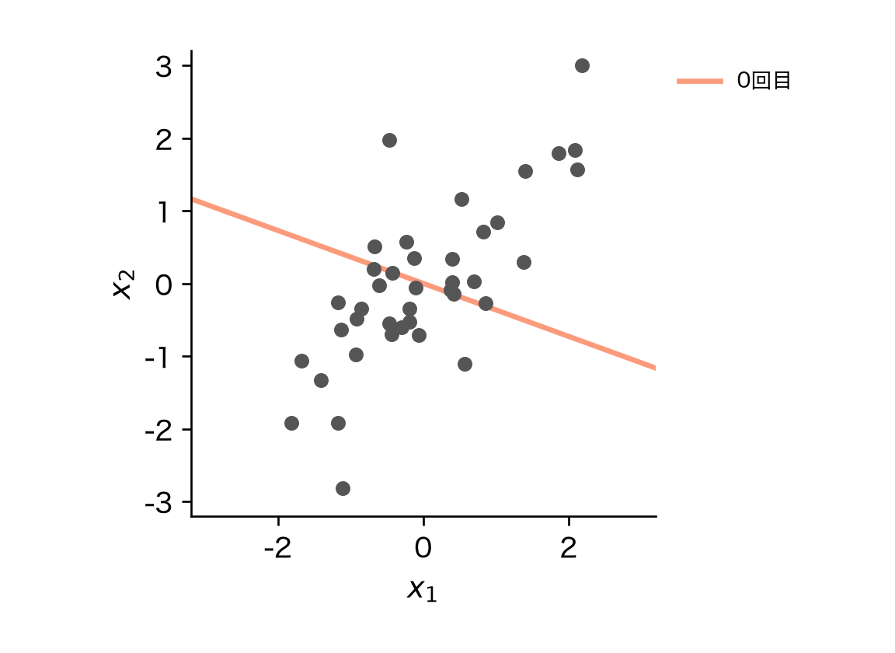
帰結②：直線が回っていく
更新のたびに、直線は点の雲の長い向きへ回る。4回目にはほとんど動かない。
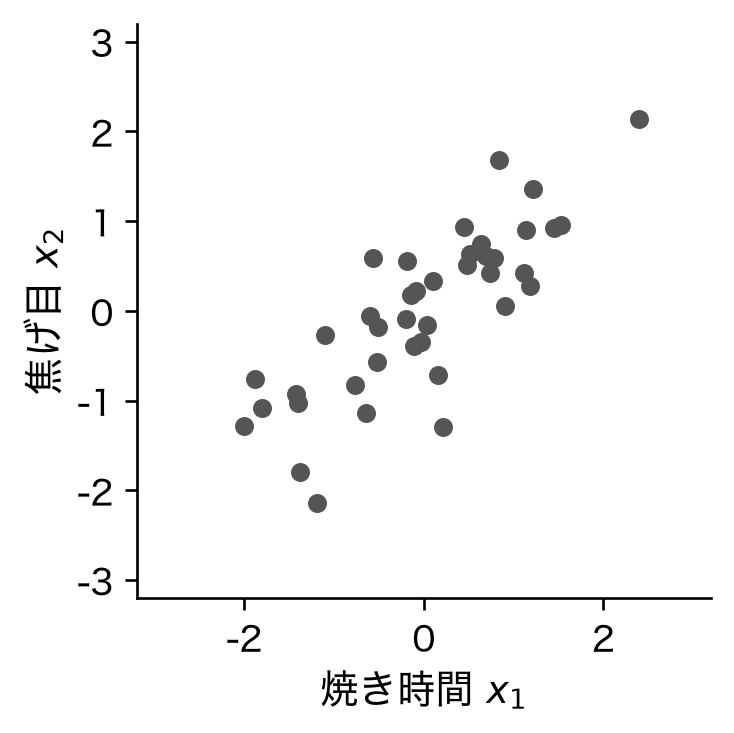
帰結③：Jは毎回下がる

J は 73.1 から一度も上がらず、11.64 に落ち着く。どちらの更新でも下がる。
帰結④：初期値を変えて解く
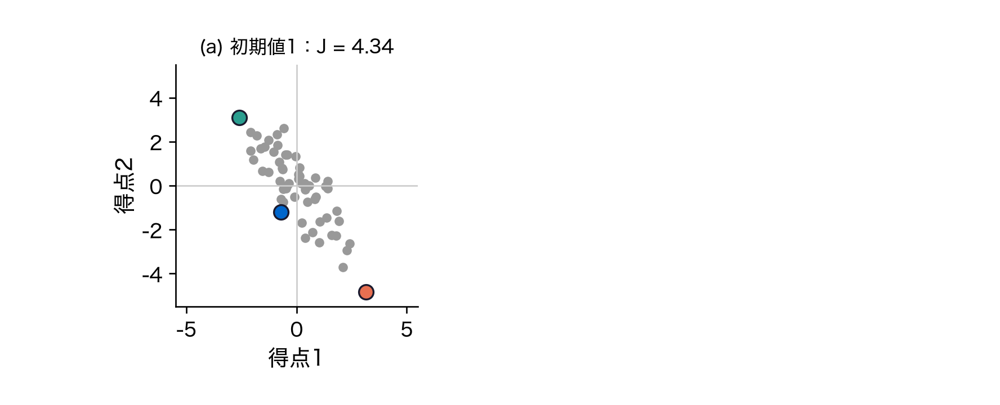
ここでは人工的なデータ（3列・60点、Q=2）。着いた \mathbf F の2列を散布図にした。色の3点は目印。
帰結⑤：別の初期値の得点
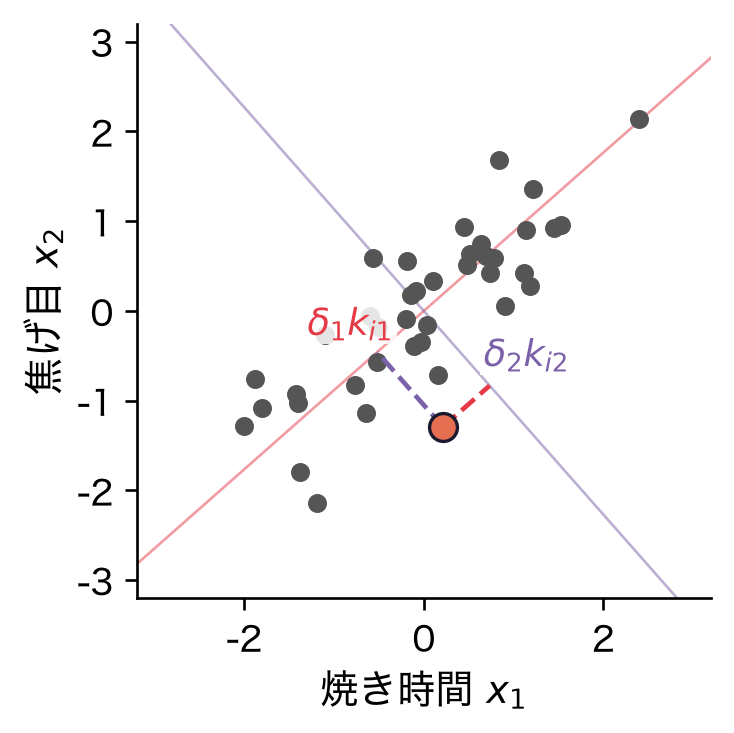
初期値だけを変えた。J は同じで、点の並びは約 83 度回っている。
帰結⑥：軸を回しても同じ近似
\begin{aligned} (\mathbf F\mathbf R)(\mathbf A\mathbf R)^\top&=\mathbf F\mathbf R\mathbf R^\top\mathbf A^\top=\mathbf F\mathbf A^\top\\ (\mathbf A\mathbf R)^\top(\mathbf A\mathbf R)&=\mathbf R^\top\mathbf A^\top\mathbf A\mathbf R=\mathbf I_Q \end{aligned}
\mathbf R は Q\times Q の正規直交行列。\mathbf F と \mathbf A を同じ \mathbf R で回すと、近似も制約も J も変わらない。
帰結⑦：回すか裏返すか
\mathbf R=\begin{bmatrix}\cos\theta&-\sin\theta\\ \sin\theta&\cos\theta\end{bmatrix} \quad\text{または}\quad \begin{bmatrix}\cos\theta&\sin\theta\\ \sin\theta&-\cos\theta\end{bmatrix}
Q=2 の \mathbf R は、角 \theta の回転か、裏返しを含む形。Q=1 なら \mathbf R=\pm1、向きの反転。
帰結⑧：決まるのはどれか
| 初期値を変えると | |
|---|---|
| J の値 | 変わらない |
| 近似 \mathbf F\mathbf A^\top（各マスの近似値） | 変わらない |
| \mathbf A の2列が張る面 | 変わらない |
| 軸1・軸2それぞれの向き（\mathbf A の列、\mathbf F の列） | 回る・裏返る |
交互最小二乗法の答えは、\mathbf R の分だけ決まらない。
位置づけ：地図のPCAの行
| モデル | 近似する相手 | 目的関数 | 解き方 | 回 |
|---|---|---|---|---|
| 線形回帰 | y | \lVert\boldsymbol y-\mathbf X\boldsymbol\beta\rVert_2^2 | 正規方程式を1回解く | 第1回 |
| 主成分分析 | \mathbf X | \lVert\mathbf X-\mathbf F\mathbf A^\top\rVert_F^2 | 交互に解く | 第9・10回 |
| k-means | \mathbf X | \lVert\mathbf X-\mathbf G\mathbf C\rVert_F^2 | 交互に解く | 第11回 |
第8回の3つの目的関数のうち、2つ目を解いた。
第II部 実データ解析
第II部でやること
- 場面の手書き数字で、第I部の交互最小二乗法を回す
- 初期値を変えて、J・近似・軸の向きを比べる
- 得点と近似を、画像に戻して読む
データ：手書き数字
| 行 | 手書きの数字の画像 1,797 枚（0〜9がおよそ180枚ずつ） |
| \mathbf X | 8×8＝64 マスの濃さ（0〜16） |
| 数字のラベル | 計算には使わない。得点の図を塗るだけ |
n\times p= 1,797 \times 64。
前処理：平均を引くだけ
- 64列は同じ単位の濃さなので、標準化しない
- どの画像でも0のマスが 3 つあり、標準化すると0で割ることになる
列の平均を引いて、第I部と同じく列の平均を0にする。
手続き：何をどう計算したか
- 用意する：64マスの列の平均を引いた \mathbf X。軸の数は Q=2
- 初期値を3通り：乱数の種を変えた3つの 64\times2 の正規乱数の行列を、特異値分解で \mathbf A=\mathbf K\mathbf L^\top にする
- 交互に更新する：I-6の手順をNumPyの行列の積と特異値分解で。J の下がり幅が \lVert\mathbf X\rVert_F^2 の 10^{-12} 倍を切ったら止める
- 比べる：J の推移、3通りの J・近似 \mathbf F\mathbf A^\top・\mathbf A の回り方。ライブラリ（scikit-learnのPCA）の J とも比べる
検証①：初期値1のJ
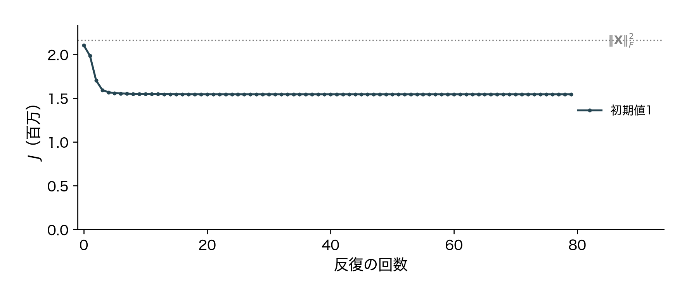
J は一度も上がらず、79 回で止まった。点線は \mathbf F=\mathbf O のときの J。
検証②：どの初期値でも下がる

3通りとも J は一度も上がらず、62〜84 回で止まった。
検証③：着いたJは同じ
| 初期値1 | 初期値2 | 初期値3 | |
|---|---|---|---|
| 反復の回数 | 79 | 62 | 84 |
| 最後の J | 1,543,523.8 | 1,543,523.8 | 1,543,523.8 |
| ライブラリの J との差 | 6.4e-06 | 6.4e-06 | 5.3e-06 |
3通りの J は同じで、ライブラリの J とも一致する。
検証④：Aは回る・裏返る
| 初期値1 | 初期値2 | 初期値3 | |
|---|---|---|---|
| 反復の回数 | 79 | 62 | 84 |
| 最後の J | 1,543,523.8 | 1,543,523.8 | 1,543,523.8 |
| ライブラリの J との差 | 6.4e-06 | 6.4e-06 | 5.3e-06 |
| \mathbf F\mathbf A^\top の初期値1との差（最大） | 0 | 2.5e-04 | 1.1e-05 |
| \mathbf A^\top\mathbf A と \mathbf I の差（最大） | 0 | 0 | 0 |
| 初期値1の \mathbf A からの \mathbf R | そのまま | 回転 64° | 裏返しを含む |
近似 \mathbf F\mathbf A^\top も3通りで同じ。\mathbf A は回る・裏返る（帰結⑦の2つの形）。
デモ①：2本の軸の得点
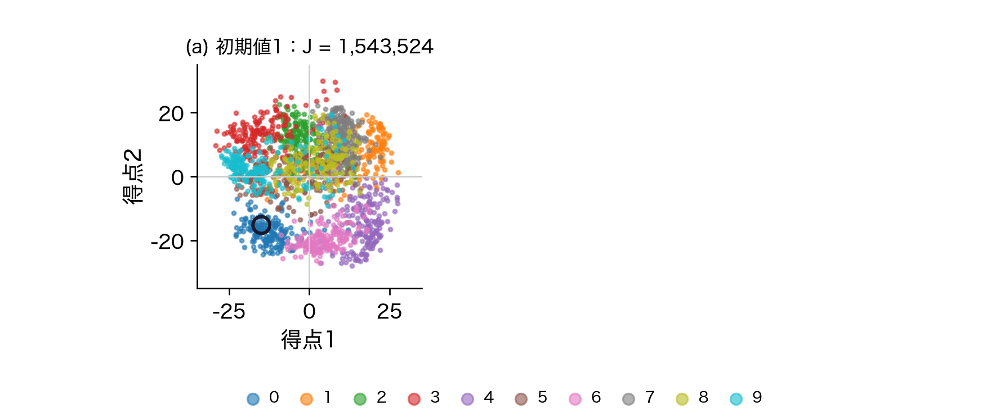
1,797 枚を、64個の数から2つの数 \mathbf F にした。黒い丸は場面①の0。色は数字（計算には使っていない）。
デモ②：別の初期値の得点

同じ J。数字の並びごと 64 度回っている。
解釈①：近似はぼやけた0
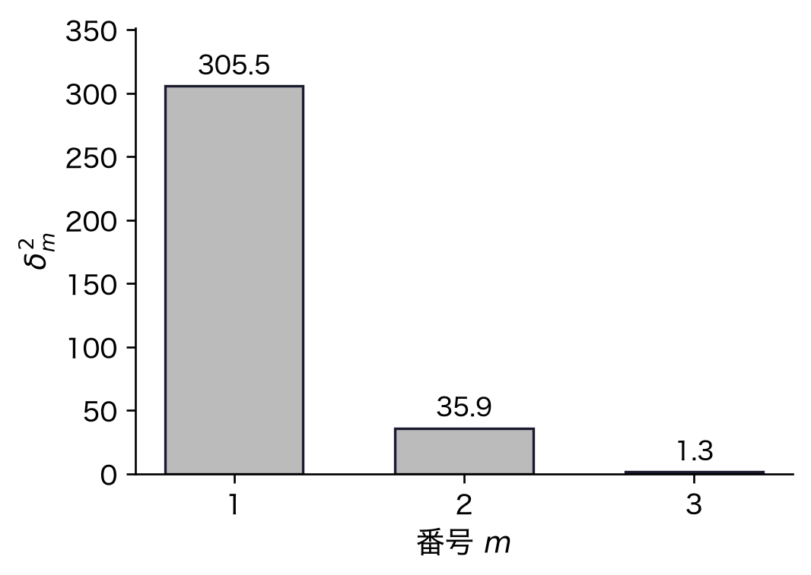
得点2つから \mathbf A\tilde{\boldsymbol f}_i を作り、列の平均を足し戻して画像にした。2本で表しきれない分は誤差に残る。
解釈②：近似は同じ
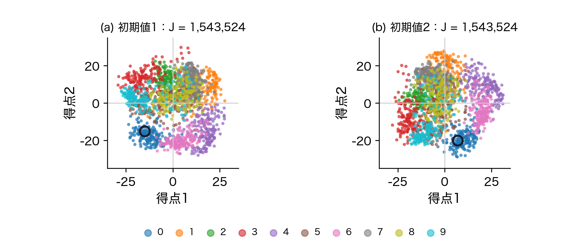
得点は違うのに、近似は同じ。回した分を \mathbf A が打ち消す。
落とし穴①：軸1に名前を付ける
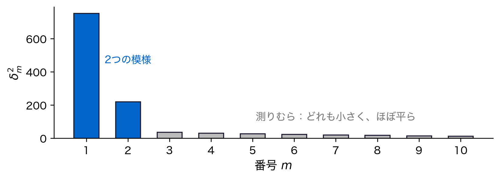
軸1の負荷量 \boldsymbol a_1 を8×8に並べた（赤は正、青は負）。「軸1は0の形」と名付けたくなる。
落とし穴②：解き直すと別の模様
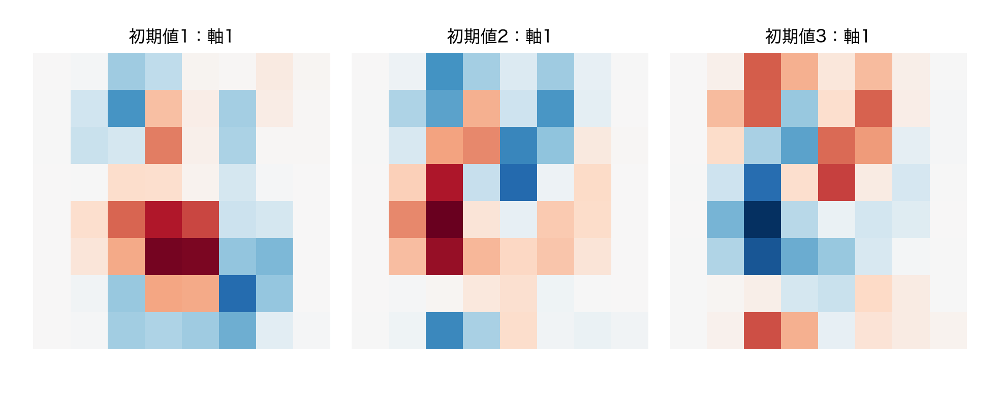
初期値を変えると、軸1の模様が変わる。決まるのは2本の軸が張る面までで、どれを軸1と呼ぶかは決まらない。
締め
まとめ①：片方ずつ交互に解く

\mathbf A を固定して \hat{\mathbf F}=\mathbf X\mathbf A。\mathbf F を固定して \mathbf X^\top\mathbf F=\mathbf K\boldsymbol\Delta\mathbf L^\top から \hat{\mathbf A}=\mathbf K\mathbf L^\top。
まとめ②：Jは毎回下がる
どちらの更新も、固定した残りのもとでの最小。だから J は上がらず、直線は点の雲の向きへ回っていく。
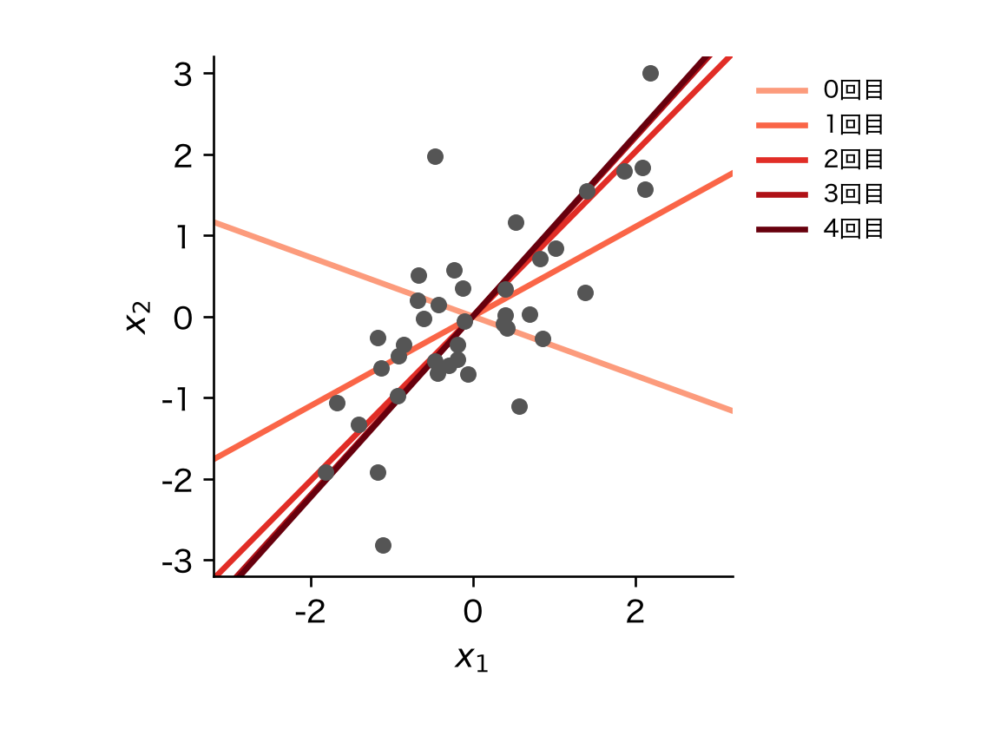
まとめ③：答えは回る
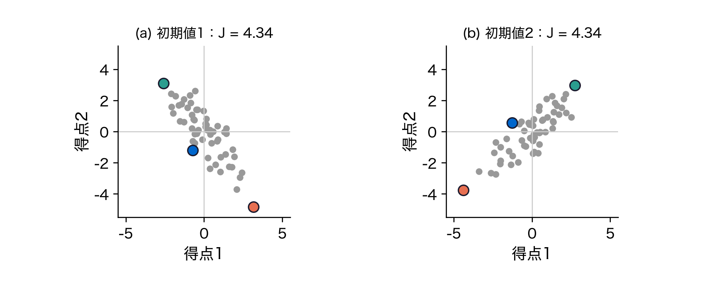
答えは、軸を回す \mathbf R の分だけ決まらない。決まるのは、J と近似 \mathbf F\mathbf A^\top と軸の張る面。
演習では①：顔を50本の軸で
- 演習11（顔画像）：4096ピクセルの顔を、50本の軸で組み立て直す
- 1枚の画像を少数の数で言う。今日の手書き数字と同じ形
演習では②：軸の向きが反転
- 演習12（自動車）：「PCAの軸は、向きを反転しても同じ散らばりを受け持つ。左右が逆になっても慌てない」
- 今日の帰結⑦の \mathbf R=-1。(\mathbf F\mathbf R)(\mathbf A\mathbf R)^\top=\mathbf F\mathbf A^\top
次回予告①：反復して着いたJ
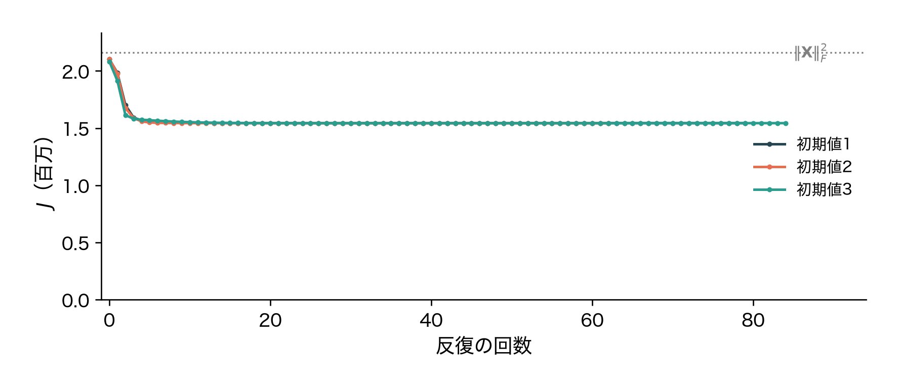
3通りの初期値が、62〜84 回の反復で同じ J = 1,543,524 に着いた。
次回予告②：毎回分解していた
- 反復のたびに、\mathbf X^\top\mathbf F を特異値分解していた
- 着く先は、初期値によらず同じ J だった
次回予告③：1回で解けないか
- では、\mathbf X そのものを特異値分解したら？
問い：反復せず1回で解けないか？